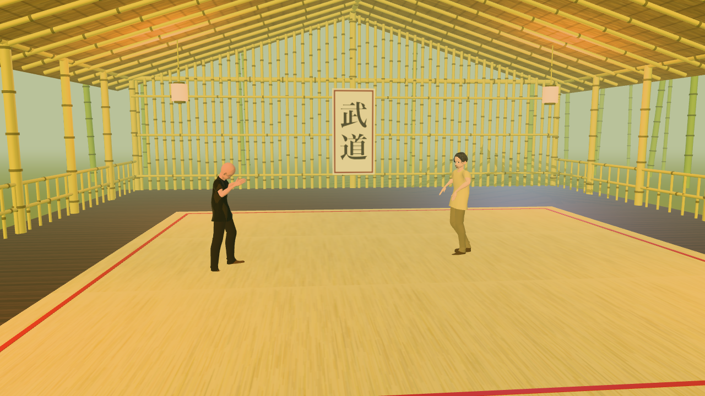

A sparring match from a two-person motion capture #

sparring.json, seen through cam-wide at 12 s.Two people sparred for 170 seconds in front of an optical motion-capture system. Here you turn that take into a 53-second match: register the pair, cut it as data, check every frame for collisions, move the camera shots onto the new timeline, and give both fighters somewhere to look.
sparring.json in the tejaswigowda/test1 repo; open it and paste each block below into the Shell tab. The fighters are labelled #f1 and #f2 and carry the clips st1_1072026Skeleton and st2_1072026Skeleton, 170.17 s each. Every block is one undoable step.1 Register the pair #
The two clips were captured together, in one shared world frame: each fighter's root motion already says where they stand relative to the other at every moment. Move or retime one fighter alone and that relationship breaks and the bodies overlap. So the pair is registered as a single editable group, and every edit applies to both fighters at once.
const sparring = $M.group('sparring', ['#f1', '#f2']);
sparring.collision(); // baseline: the full 170 s captureThe collision report measures the hip-to-hip distance on the floor over the timeline and flags anything under 0.6 m, a reasonable floor for non-contact sparring. For the full capture the closest the two ever get is 0.80 m: this is non-contact sparring — a strike that should read as connecting has to be sold by the cut, not by the geometry.
2 Find the exchanges #
170 seconds is too long, and the middle of it is empty. Measuring where the two come close together, the exchanges are front-loaded — ten of them between 2.6 s and 43.2 s — then there is nothing from 43.2 s to 98.5 s, then they resume and thin out. Padding each cluster by −1.0 s before and +1.2 s after, and merging gaps under 0.4 s, gives eight spans:
| # | in | out | dur | closest |
|---|---|---|---|---|
| E01 | 1.60 | 9.00 | 7.40 s | 0.94 m |
| E02 | 14.60 | 22.10 | 7.50 s | 0.96 m |
| E03 | 30.80 | 44.40 | 13.60 s | 0.80 m |
| E04 | 97.50 | 103.40 | 5.90 s | 1.11 m |
| E05 | 104.80 | 110.80 | 6.00 s | 0.93 m |
| E06 | 113.70 | 117.60 | 3.90 s | 1.08 m |
| E07 | 134.70 | 140.60 | 5.90 s | 1.10 m |
| E08 | 158.40 | 161.10 | 2.70 s | 1.17 m |
That drops 44.4 – 97.5 s (53.1 s) and keeps 52.9 s, 31% of the source. Widen the handles if you want it longer, but don't pad back toward the lull. One fighter covers noticeably more floor than the other (91.5 m against 78.3 m): the more mobile fighter is characterisation you get for free, so favour it when you pick shots.
3 Cut it — as data #
A cut here is not a re-bake. It is an edit list: eight spans stored on the timeline, a few hundred bytes. The captured clips are only ever read.
sparring.splice([
[1.6, 9.0], [14.6, 22.1], [30.8, 44.4], [97.5, 103.4],
[104.8, 110.8], [113.7, 117.6], [134.7, 140.6], [158.4, 161.1],
].map(([from, to]) => ({ from, to })), { blend: 0.25 });
sparring.asCommand(); // the declarative form of this cut
sparring.table(); // each span with its start and length on the new clockThe blend is mandatory. Over a 0.25 s window at every cut, each rotation is slerped from the outgoing pose to the incoming one, and the floor position is offset so the pair's centre continues from where it was — otherwise the bodies pop or teleport at every join. That offset is computed from the pair's centre and applied to both fighters, so how far apart they stand survives the cut.
$S('#f1').play('st1_1072026Skeleton', { from: 1, to: 5 }) is refused, because it would desynchronise the pair. Per-fighter timing (timeOffset, speedOf) needs an explicit sparring.breakRegistration(), which warns what you lose (they can clip through each other) and is undoable.4 Check every frame #
No renderer will tell you the fighters now overlap. The collision report runs over the edited timeline:
const report = sparring.collision();
report.min; // 0.741
report.ok; // true: no span under 0.6 m
report.spans; // the closest approach inside each spanThe cut's closest approach, 0.74 m, is a little closer than the capture's own 0.80 m, and it sits at the start of E07 (44.4 s on the new clock), inside the blend window. The blend interpolates both fighters' positions, so it can bring them nearer than either source span does; that is exactly the sort of thing this check exists to catch. If a span ever reports under 0.6 m, widen the blend or move the cut point.
5 Put the cameras on the new timeline #
The four cameras' keys, and the Render tab's 37-shot sequence, were cut against the 170 s source. remapShots() moves the camera keys: an event that lies wholly inside one kept span is moved to the cut's clock; anything else is dropped and reported.
const r = sparring.remapShots();
r.kept; r.dropped; // 396 kept, 964 dropped (the keys that straddle a cut or fall in the lull)
editor.timeline.toJSON().duration; // 52.9The Camera Sequence in the Render tab is a separate list of which camera is live when. Move it onto the same clock: for each span, the shot that was live when the span began opens it, and any shot that began inside the span moves with it.
(async () => {
const { edlTable } = await import('./intelligence/motionEdit.js');
const g = editor.timeline.group('sparring');
const spans = edlTable(g.edl).filter(r => !r.hold);
const shots = scene.userData.renderShots.slice().sort((a, b) => a.at - b.at);
const next = new Map();
for (const r of spans) {
const open = shots.filter(s => s.at <= r.from).pop(); // the shot live as the span begins
if (open) next.set(+r.outStart.toFixed(3), { ...open, at: +r.outStart.toFixed(3) });
for (const s of shots) if (s.at > r.from && s.at < r.to) {
const at = +(r.outStart + (s.at - r.from) / r.speed).toFixed(3);
next.set(at, { ...s, at });
}
}
scene.userData.renderShots = [...next.values()].sort((a, b) => a.at - b.at).map((s, i) => ({ ...s, id: 'shot-' + i }));
})();The Shell does not print what an async block returns; check scene.userData.renderShots.length afterwards (37 shots become 18, the last at 50.2 s). This block assigns the list directly, so it is not on the undo stack; to go back, reload the scene or re-run the shot list from the dojo tutorial. Open the Render tab to see the sequence on the 52.9 s timeline.
6 Give them somewhere to look #
Two people watching each other for 53 seconds: most of the acting is where they look, and not looking dead. Both are timeline data. A gaze key whose target is a selector follows that fighter as they move; the eyes lead and the head lags, and past the eyes' range the head takes over, so there are no doll eyes.
const A = $S('#f1'), B = $S('#f2');
A.gaze(0, '#f2', { duration: 0 });
B.gaze(0, '#f1', { duration: 0 });
// a look away and back between exchanges (times on the cut's clock)
for (const t of [6.4, 14.2, 28, 34.4, 40.2, 44.1])
A.gaze(t, 'away', { duration: 250, head: 0.2 }).gaze(t + 0.9, '#f2', { duration: 300 });
for (const t of [6.9, 14.7, 28.6, 34.9, 40.6, 44.6])
B.gaze(t, 'away', { duration: 250, head: 0.2 }).gaze(t + 0.9, '#f1', { duration: 300 });Measured on this cut: wherever the other fighter is inside the eyes' range, the eyes sit within about 1° of their head, and sampling both faces costs about 0.6 ms per frame. Then add the idle layer:
A.face.idle({ seed: 11 }); // a seeded blink, a faint breath, a little gaze micro-noise
B.face.idle({ seed: 12 });The idle layer is seeded — the same scene renders the same blinks on every run — and it is an underlayer: it never becomes keys, A.face.idle(false) removes it, and the keys you authored are untouched. A held expression (hold: true) keeps blinks out of it. The same keys are in the Customize tab (Face performance) and the Animations tab's code panel; see Authoring a face for expression keys and the details.
7 Dress them, and let the faces act #
Captured bodies carry no performance in their faces, and the two fighters arrive in unrelated clothes. Three passes fix that: costume, an expression arc that follows the exchanges, and light and camera to match. None of it touches a vertex, a skin weight or the skeleton, so the capture still drives both rigs exactly.
Costume. One fighter becomes a black gi, the other a white gi, both barefoot, so they read apart from any camera:
(async () => {
const { CustomizeCommand } = await import('./commands/CustomizeCommand.js');
const dress = (id, top, bottom, name) => editor.execute(new CustomizeCommand(editor, editor.scene.getObjectByName(id), [
{ op: 'recolor', target: 'part:shirt', color: top },
{ op: 'recolor', target: 'part:bottom', color: bottom },
{ op: 'hide', target: 'part:shoes' },
], name));
dress('f1', '#262833', '#1c1d26', 'f1: black gi, barefoot');
dress('f2', '#ece7dc', '#e2dccd', 'f2: white gi, barefoot');
})();An expression arc. Faces change over time, and every change is a key you can see and move in the Animations tab (and edit from Customize → Face performance). Three held looks carry the whole piece — focus at rest, exert for whoever is attacking, alert for whoever is defending — switched per exchange. Times are on the cut's clock, so each exchange starts where sparring.table() says it does:
const A = $S('#f1'), B = $S('#f2');
const base = { browInnerUp: 0, eyeWideLeft: 0, eyeWideRight: 0, mouthSmileLeft: 0, mouthSmileRight: 0, mouthFrownLeft: 0, mouthFrownRight: 0, jawOpen: 0 };
const LOOK = {
focus: { ...base, browDownLeft: 0.2, browDownRight: 0.2, eyeSquintLeft: 0.12, eyeSquintRight: 0.12, mouthPressLeft: 0.18, mouthPressRight: 0.18 },
exert: { ...base, browDownLeft: 0.45, browDownRight: 0.45, eyeSquintLeft: 0.3, eyeSquintRight: 0.3, mouthPressLeft: 0.35, mouthPressRight: 0.35, mouthFrownLeft: 0.12, mouthFrownRight: 0.12, jawOpen: 0.04 },
alert: { ...base, browDownLeft: 0.05, browDownRight: 0.05, browInnerUp: 0.28, eyeWideLeft: 0.2, eyeWideRight: 0.2, mouthPressLeft: 0.15, mouthPressRight: 0.15 },
};
const look = (who, name, t, ms = 400) =>
who.face.keyAt(t, { shapes: { ...LOOK.focus, ...LOOK[name] }, duration: ms, easing: 'ease-out', hold: true });
A.face.keyAt(0, { shapes: LOOK.focus, duration: 0, hold: true });
B.face.keyAt(0, { shapes: LOOK.focus, duration: 0, hold: true });
// [start, length, who leads] for each span, on the cut's clock
const rounds = [[0, 7.4, A], [7.4, 7.5, A], [14.9, 13.6, A], [28.5, 5.9, A], [34.4, 6.0, B], [40.4, 3.9, A], [44.3, 5.9, A], [50.2, 2.7, 'both']];
for (const [t, len, lead] of rounds) {
const att = lead === 'both' ? [A, B] : [lead], def = lead === 'both' ? [] : [lead === A ? B : A];
att.forEach(f => look(f, 'exert', t + 0.2));
def.forEach(f => look(f, 'alert', t + 0.2));
[A, B].forEach(f => look(f, 'focus', t + len + 0.8, 600)); // settle between exchanges
}
// the closest approach (E03): the defender flinches, then recovers
B.face.applyPreset('surprise', 20.5, { duration: 150 });
look(B, 'alert', 22.7, 500);Presets expand to explicit per-shape keys, so a flinch like surprise is just more keys. The cut removes the long lull, so the quiet beat that follows it in the uncut capture is gone; to end on a bow, finish with a held smile once the last exchange lands: A.face.applyPreset('smile', 52.1, { duration: 600, hold: true }) on both fighters, then A.gaze(52.4, 'away', { duration: 400 }). The step 6 gaze keys and idle layer sit underneath all of this unchanged.
sparring.json in the repository carries this look on the uncut capture, so its expression keys are on the source clock (the eight spans start at 1.6, 14.6, 30.8, 97.5, 104.8, 113.7, 134.7 and 158.4 s). If you cut the scene as in step 3, use the cut-clock times above.Light and camera. Use the same pass as the dojo: sky fill 0.85 → 0.6, sun key → 3.1, cool rim → 1.2, fog density → 0.02 (the commands are in Build the dojo scene, step 10), then bring the wide camera in. This keeps each wide shot's look direction and just moves the camera closer and lower:
(async () => {
const { editCameraTrack } = await import('./intelligence/cameraMoveEdit.js');
const cam = editor.scene.getObjectByName('cam-wide');
editCameraTrack(editor, cam, 'Camera: tighten cam-wide', track => {
for (const ev of track.events) {
const p = ev.args.props;
if (ev.op !== 'animate' || !p?.to?.position) continue;
const L = p.lookAt, q = p.to.position;
p.to.position = [L[0] + (q[0] - L[0]) * 0.9, 1.7, L[2] + (q[2] - L[2]) * 0.9]; // 10% closer, eye-level-ish
p.lookAt = [L[0], 1.02, L[2]];
p.fov = 38; // was 42
}
});
})();Run it once (it is not idempotent), and then repeat the step 4 frame check — a tighter lens is exactly what pushes a fighter's hand or foot out of frame. On this capture, every wide-shot frame at 16:9 still holds both fighters' head, hips, hands and feet.
8 Render it and save #
- Press Play in the Animations tab: the timeline is 52.9 s, both fighters move, the cameras cut, and the eyes follow.
- Open the Render tab and render the camera sequence to video. Keep the tab in the foreground while it renders — browsers throttle hidden tabs, which makes frames stall.
- In the Git tab, set Scene file to a new name such as
sparring-cut.jsonand press Commit Scene. The scene is saved compactly (one line, animation numbers quantized), and what is stored is the full capture plus the edit list, the camera keys and the face keys.sparring.jsonitself stays the uncut capture. - Undo, or
sparring.clear(), brings back the full 170.17 s capture exactly — the clips were never modified.
Credits and licences #
People #
- Tejaswi Gowda (script)
- Pavan Turaga (asset)
- Assegid Kidane (asset)
Assets #
- Sparring capture: clips st1_1072026Skeleton and st2_1072026Skeleton (170.17 s): Recorded with an OptiTrack system in "Martial Arts and Motion Capture" (GAME 294), Arizona State University; course run by Pavan Turaga, recorded by Assegid Kidane; the two performers are not named Licence: not stated.
Tools #
None used.